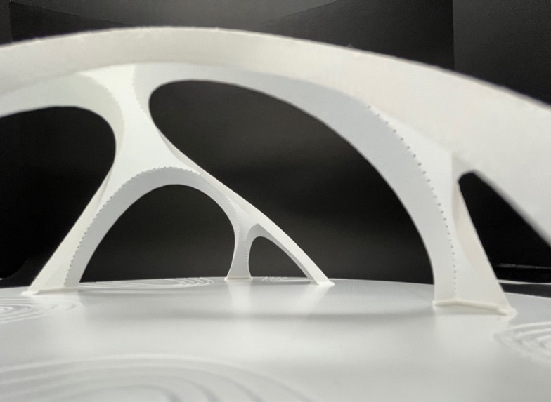
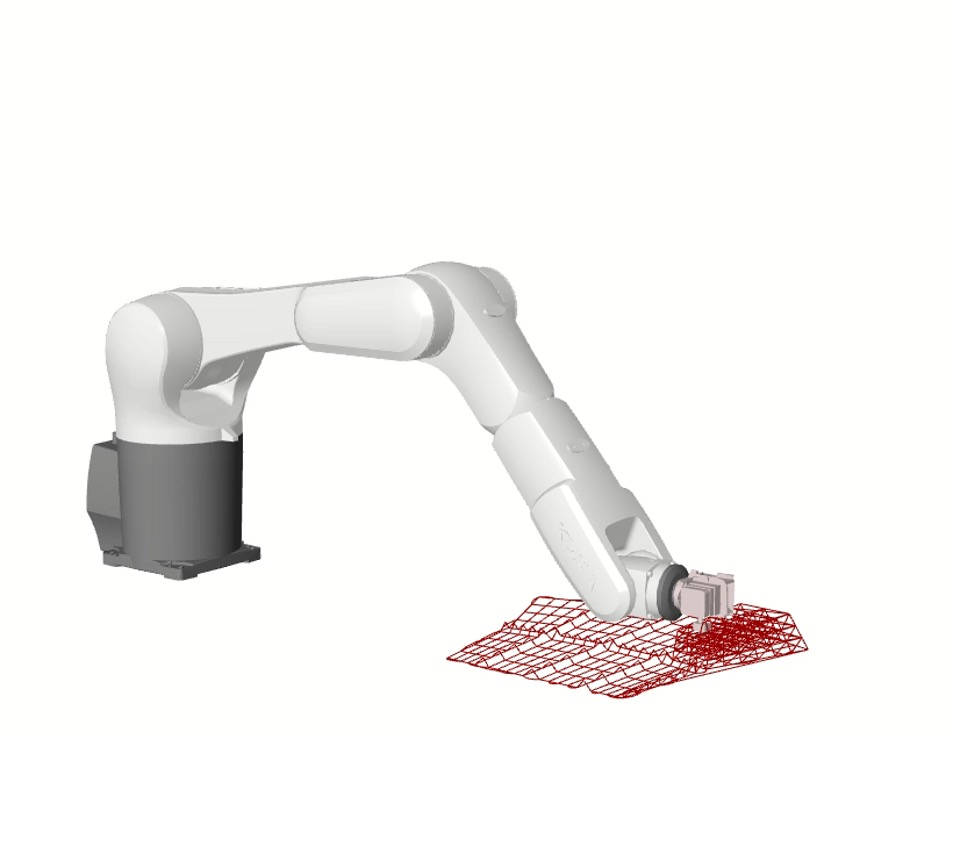
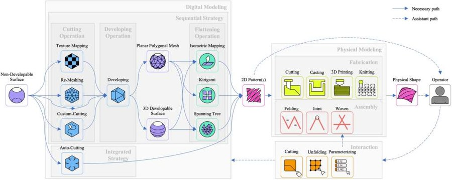
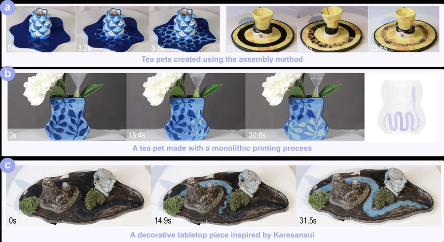
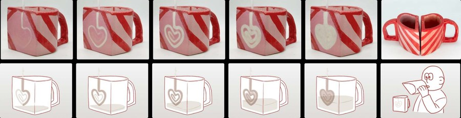
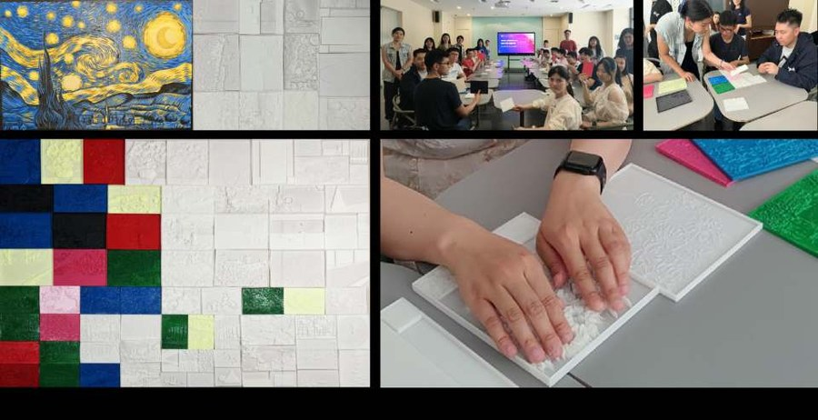
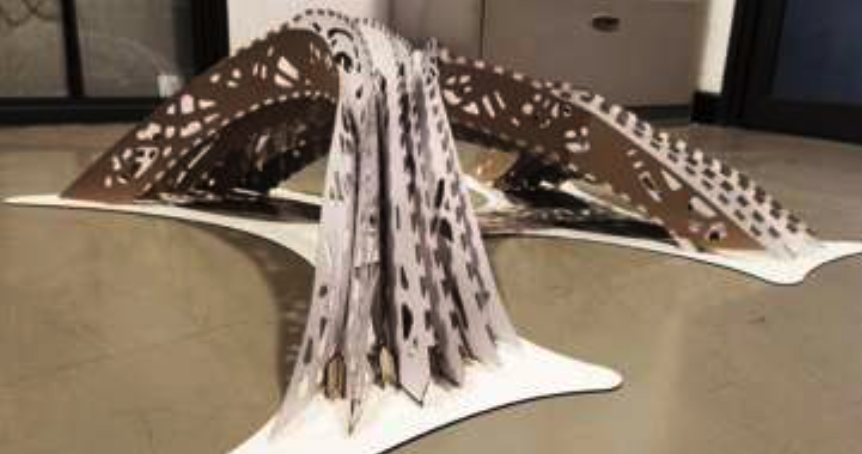
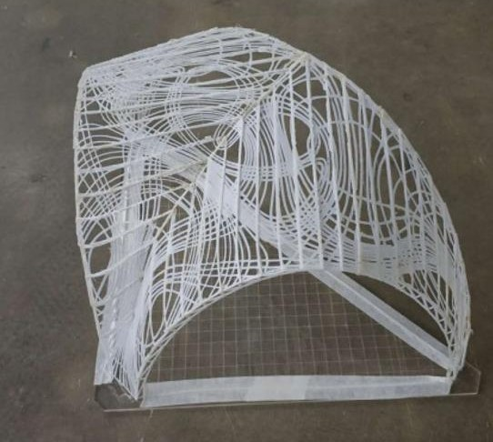

Computational Design · Machine Learning
AI驱动的混合晶格逆向设计系统
Perfattice: Interactive Performance-Driven Design of Heterogeneous Lattices
查看项目详情 →
袁潮，现为同济大学智能科学与技术专业博士研究生，硕士毕业于清华大学美术学院工业设计系，具备艺术与科技的跨学科背景。研究方向涵盖计算设计、人机交互与计算机图形学，近年来重点探索几何结构与材料的设计方法，并致力于智能设计工具的研发以推动设计创新。
Chao Yuan is currently a Ph.D. candidate in Intelligent Science and Technology at Tongji University. He received his Master's degree from the Department of Industrial Design, Academy of Arts and Design, Tsinghua University. With an interdisciplinary background bridging art and technology, his research spans computational design, human–computer interaction, and computer graphics. In recent years, he has focused on design methods for geometric structures and materials, and on developing intelligent design tools to advance design innovation.
Computational Design · Machine Learning
Perfattice: Interactive Performance-Driven Design of Heterogeneous Lattices
查看项目详情 →
4D Printing · Digital Fabrication
FreeShell: A Context-Free 4D Printing Technique for Complex 3D Triangle Mesh Shells
查看项目详情 →
Digital Fabrication · HCI
InterFlex: An Interactive Tool for Designing and 3D-Printing Wearable Flexible Supporting Materials
查看项目详情 →
Computational Geometry · Fabrication
CurveFolds: A Surface Fabrication Method Based on Curve Folding
查看项目详情 →
Shell Structures · 3D Printing
FoldableShell: A 3D-Printed Shell Framework Based on Developable Surface Principles
查看项目详情 →
Material Design · Installation
Structural Color Matrix Installation

Material Design · Installation
3D-Printed Structural Color Tensile Membrane Installation





